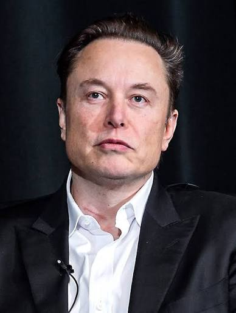
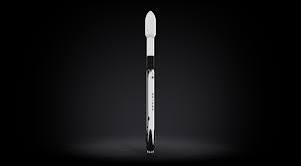
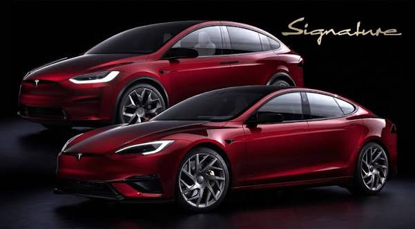
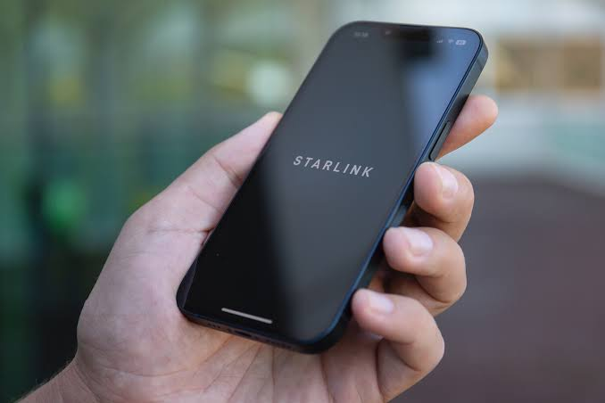
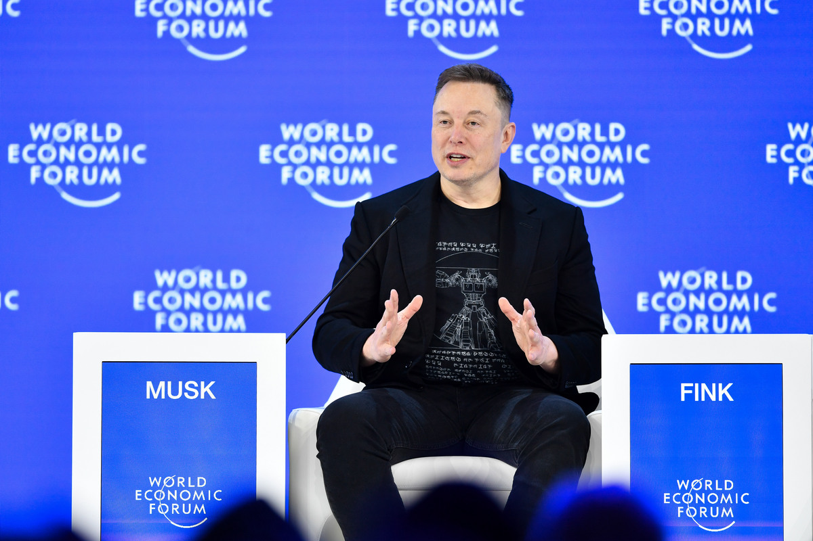
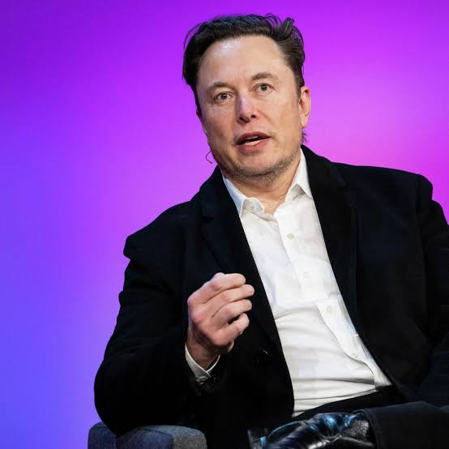

1971
Born
Hello, welcome to
Elon Musk is a prominent billionaire, entrepreneur, and engineer known for leading some of the world's most influential technology and aerospace companies. He is currently the world's richest person and recently became the world's first verified dollar trillionaire following a major valuation milestone for SpaceX..
Was born in Pretoria,South Africa
28 05 1971


Who was he?
Elon Musk is an American entrepreneur, inventor, and founder of SpaceX and Tesla. He played a major role in the development of electric vehicles, private space exploration, and satellite internet.
Known for his focus on scalability, bold ambition, and engineering first principles, Musk believes that technology should be revolutionary, sustainable, and push the boundaries of human potential.
Born
SpaceX founded
Tesla founded
Core Principles
Core Principles Ideas that changed everything Principles and fields of innovation that drive Elon Musk's vision.
Boiling problems down to fundamental truths and building up from there. .
Making technology simple and beautiful.
Accelerating the world's transition to renewable energy..
Making humanity multi-planetary and exploring the cosmos.
Moving fast, embracing failures, and continuously improving.
Deleting unnecessary parts and processes before optimizing anything.
Using robotics and AI to build machines that build the machine.
Betting everything on ambitious ideas that seem impossible at first.
His Journey
Elon Musk and his brother Kimbal founded Zip2, an early web software company providing city guides for newspapers.
Musk co-founded X.com, an online banking company that merged with Confinity to become the global payment system PayPal.
Using funds from the PayPal sale, Musk founded SpaceX with the goal of reducing space launch costs and colonizing Mars.
Musk led the Series A investment round in Tesla, becoming chairman and later CEO to accelerate the transition to electric vehicles.
Innovation in Action
Some of the products that changed the world of technology.

A reusable orbital rocket that dramatically reduced the cost of spaceflight and satellite launches.
Learn More
An all-electric luxury sedan that proved electric cars could be fast, stylish, and practical.
Learn More
A global satellite internet constellation providing high-speed connectivity to the most remote areas on Earth.
Learn MoreImpact & Words
Words and phosophies that continue to inspire creators and innovators around the world.

"When something is important enough, you do it even if the odds are not in your favor."

"You want to wake up in the morning and think the future is going to be great."
Explore Further
Want to learn more about SpaceX launches, Tesla's mission, and future technologies?